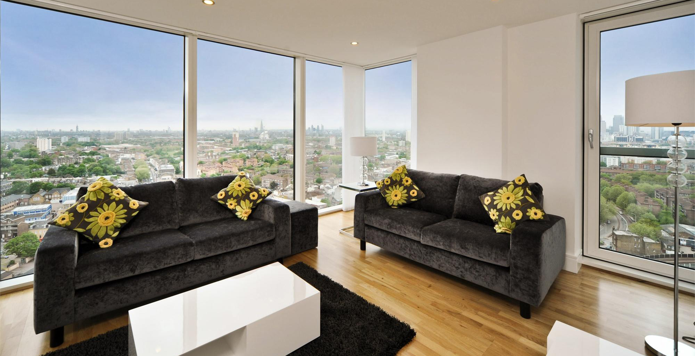
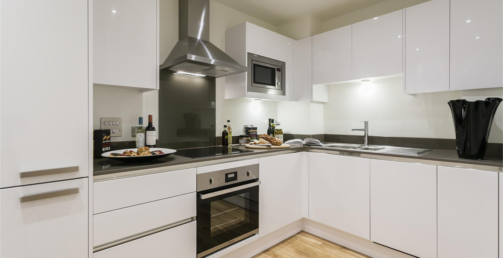
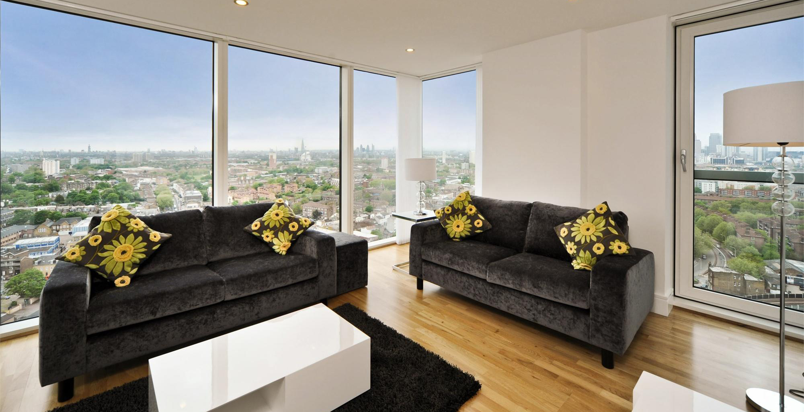
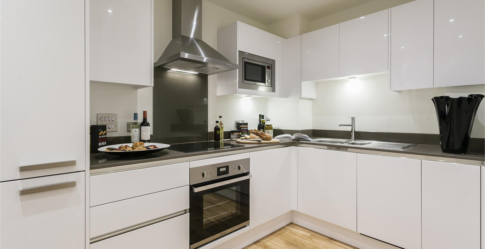
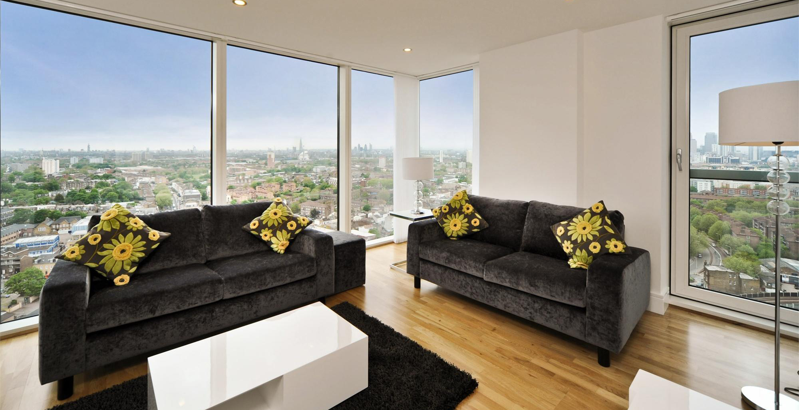
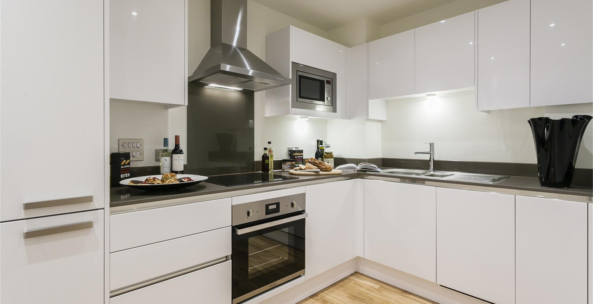
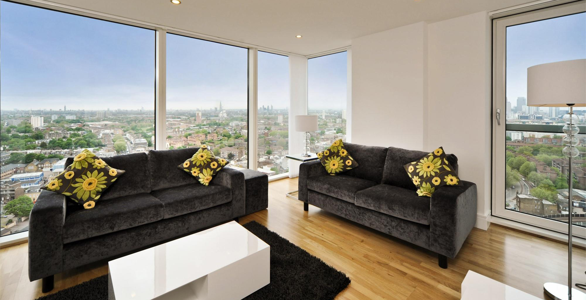
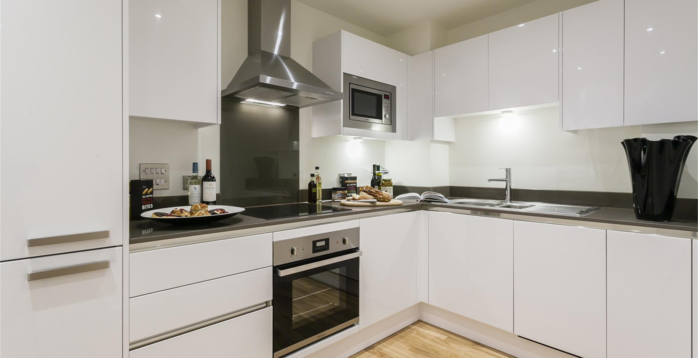
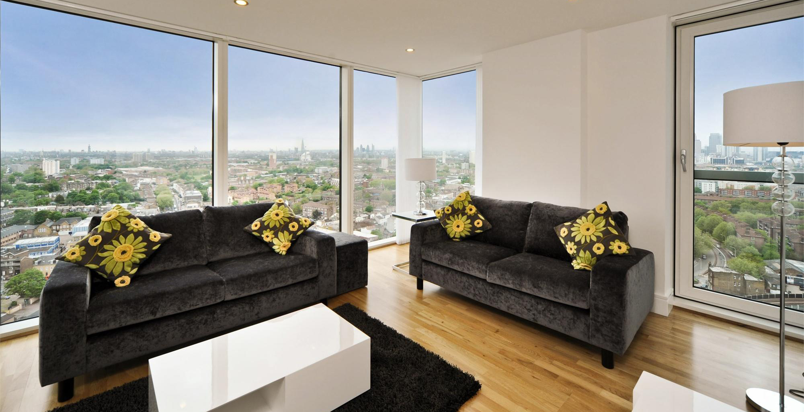
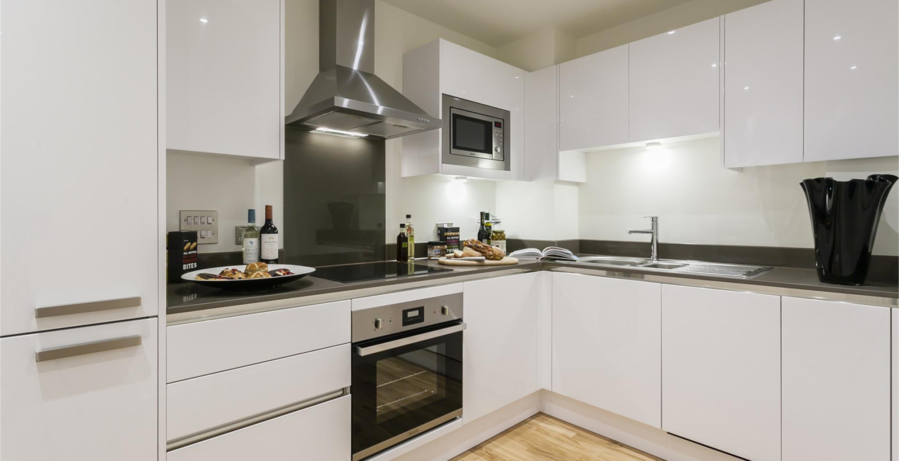
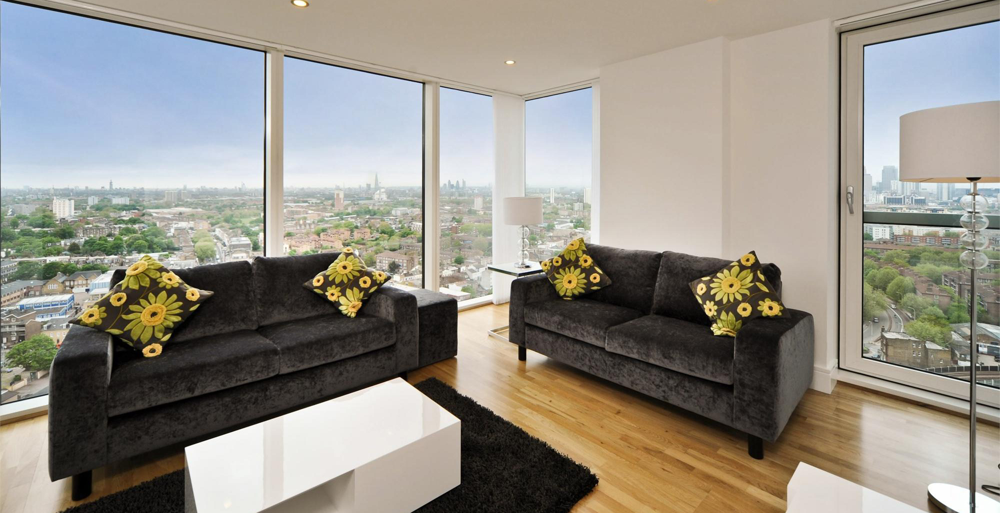
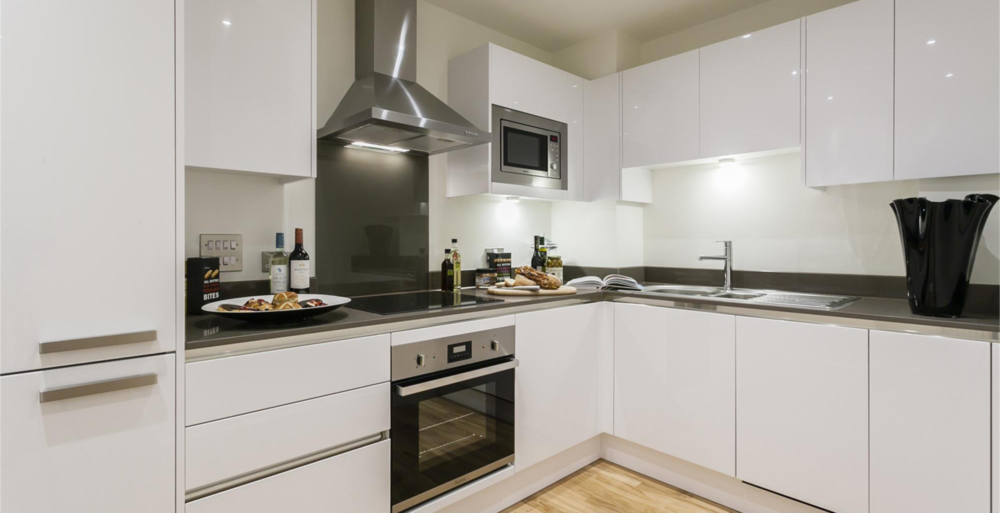
Soaring to nearly 250 feet, The Apex is set to become a major new skyline landmark for one of West London’s most desirable and vibrant metropolitan town centres. Made up of two principal buildings - The Apex Tower and Garden Court - the development comprises 100 private sale 1, 2 and 3 bedroom apartments, each designed to Galliard Homes’ premier specification. Panoramic views meet luxury living accommodation in the twenty-level Apex Tower, set behind a striking glass and aluminium-clad facade. With all remaining two and three bedroom apartments featuring a private balcony, the tower also boasts a communal viewing gallery with aspect towards Central London’s iconic skyline. The Garden Court apartments, located immediately adjacent to the Tower, are perfectly arranged over the 7th and 8th floors and benefit from virtually immediate access to an extensive communal roof terrace – a landscaped and decked haven complete with privacy screen.
A leafy West London neighbourhood, Ealing is often referred to as “Queen of the Suburbs”. Historically a rural village, Ealing has undergone a massive transformation into a major metropolitan centre and has formed part of Greater London since 1995. Whilst retaining a strong link with its notable past, the town is today alive with an eclectic mix of international cuisine, restaurants, bars, street cafes, shopping centres and galleries. Together with fantastic transport links connecting the town centre to Central London, Ealing continues to attract residents seeking all the advantages of London living but with a countryside charm.
| Retail outlets | |
|---|---|
| Marks & Spencer | River Island |
| Tesco Metro | Waterstones |
| Waitrose | JD Sports |
| Next | Fat Face |
| Monsoon | WH Smith |
| Mothercare | The Body Shop |
| Boots | Tie Rack |
| Sainsbury Local | |
| Leisure | |
|---|---|
| Questors Theatre | Walpole Park |
| Virgin Active | Ealing Cricket Club |
| Ealing Squash & Fitness | Ealing Golf Club |
| Trailfinders Sports Complex | Ealing Rugby Club |
| Gurnell Swimming Baths | Ealing Common |
| Mothercare | The Body Shop |
| Pitzhanger Manor Museum | Haven Green Park |
| Restaurants, bars & eateries | |
|---|---|
| Carluccio's | La Siesta |
| Charlotte's Place | The Green |
| Osteria Del Portico | The Haven |
| Nip Japanese Teppanyaki | The Town House |
| Okawari | Chandlers |
| Café Rouge | Starbucks |
| Gourmet Burger Kitchen | Costa Coffee |
| Bella Italia | Pizza Hut |
The Apex is situated fronting Uxbridge Road - the principal artery connecting Notting Hill, Bayswater Road and Oxford Street direct. The apartments are within 10 minutes walk of Ealing Broadway tube and mainline hub - linking Paddington to Heathrow terminals 1 - 3. For residents at The Apex, London Heathrow will be a 24 minute hop with services every 30 minutes, 7 days a week.
Tube connections are equally impressive, with the Capital’s world famous shopping streets within 25 minutes, Knightsbridge 26 and the heart of financial London less than 10 minutes more.
From a buzzing yet rural town centre dominated by its conservation areas and beautiful parkland, to the Capital’s principal landmarks in around half an hour surely acknowledges The Apex as an exceptional lifestyle opportunity in a most accessible location.
Founded in 2000 by a team of highly experienced UK property experts, Life Residential has now grown to be one of the countries leading privately owned Estate Agencies, spanning all postcodes in London from tube zones 1-6. Our Branches are strategically placed right across the Capital to efficiently manage thousands of apartments in hundreds of the finest developments.
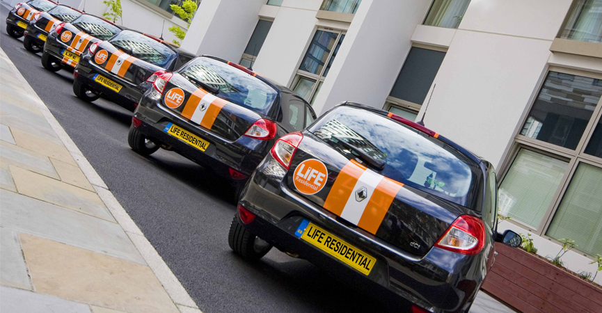